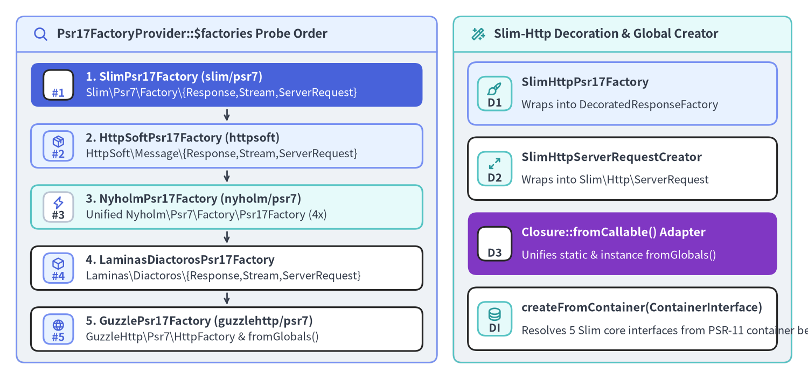
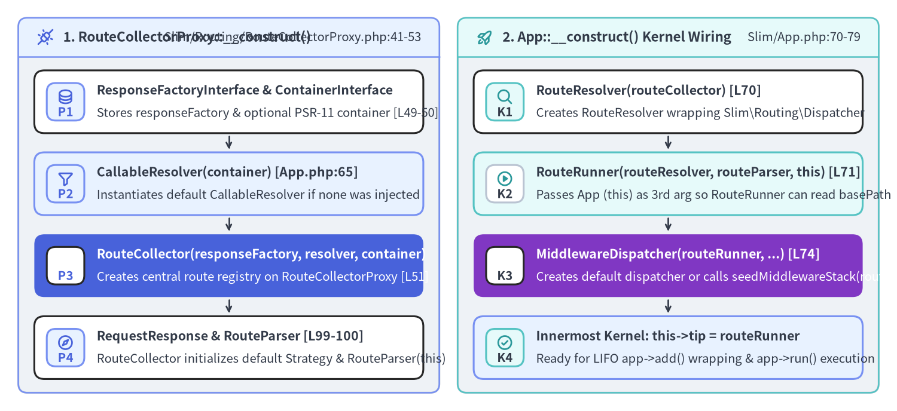

AppFactory, PSR-17 Auto-Discovery & Kernel Bootstrap Internals
Slim 4 intentionally decouples its core routing and middleware kernel from any concrete PSR-7 HTTP message library. Instead of hardcoding new Slim\Psr7\Response(), Slim provides a zero-configuration bootstrap layer in Slim\Factory\AppFactory (Slim/Factory/AppFactory.php), Slim\Factory\ServerRequestCreatorFactory (Slim/Factory/ServerRequestCreatorFactory.php), and Slim\Factory\Psr17\* (10 classes) that probes installed Composer packages at startup, optionally wraps them in slim/http convenience decorators, and wires the default Slim\App object graph.

Source Code
from drawlib.canvas import save, setup
from drawlib.icons import phosphor
from drawlib.smartarts import CardList, Panel
from drawlib.styles import Colors, Styles
setup(width=196, height=92, dpi=150)
# Left Panel: Psr17FactoryProvider Ordered Probe Queue
p_left = Panel(
"Psr17FactoryProvider::$factories Probe Order",
"",
style=Styles.Neutral.patch(shape_r=2.0),
header_style=Styles.PrimaryNeutral.patch(shape_line_width=1.2),
text_style=Styles.DarkBold.patch(text_size=10.8),
icon=phosphor.magnifying_glass,
icon_style=Styles.PrimaryBold,
header_variant="filled",
header_height=8.5,
)
p_left.draw((4.0, 4.0), width=102.0, height=84.0)
lx, lw, lh = p_left.get_content_box((4.0, 4.0), width=102.0, height=84.0, padding=(3.5, 2.8))
providers = CardList(
style=Styles.White,
text_style=Styles.DarkBold.patch(text_size=10.2),
description_style=Styles.Dark.patch(text_size=9.8),
badge_shape="rounded_rect",
badge_style=Styles.PrimaryNeutral,
badge_text_style=Styles.PrimaryBold.patch(text_size=9.8),
icon_style=Styles.PrimaryBold,
direction="vertical",
spacing=2.4,
show_arrows=True,
arrow_style=Styles.DarkBold.patch(line_arrow_head_scale=10, line_width=1.3),
)
providers.add(
"1. SlimPsr17Factory (slim/psr7)",
"Slim\\Psr7\\Factory\\{Response,Stream,ServerRequest}",
badge_text="#1",
icon=phosphor.star,
style=Styles.PrimaryFlat,
text_style=Styles.WhiteBold.patch(text_size=10.2),
description_style=Styles.White.patch(text_size=9.8),
badge_style=Styles.White,
badge_text_style=Styles.PrimaryBold.patch(text_size=9.8),
icon_style=Styles.WhiteBold,
)
providers.add(
"2. HttpSoftPsr17Factory (httpsoft)",
"HttpSoft\\Message\\{Response,Stream,ServerRequest}",
badge_text="#2",
icon=phosphor.package,
style=Styles.PrimaryNeutral,
)
providers.add(
"3. NyholmPsr17Factory (nyholm/psr7)",
"Unified Nyholm\\Psr7\\Factory\\Psr17Factory (4x)",
badge_text="#3",
icon=phosphor.lightning,
style=Styles.SecondaryNeutral,
badge_style=Styles.White.patch(shape_line_color=Colors.Gray4),
badge_text_style=Styles.DarkBold.patch(text_size=9.8),
)
providers.add(
"4. LaminasDiactorosPsr17Factory",
"Laminas\\Diactoros\\{Response,Stream,ServerRequest}",
badge_text="#4",
icon=phosphor.cube,
)
providers.add(
"5. GuzzlePsr17Factory (guzzlehttp/psr7)",
"GuzzleHttp\\Psr7\\HttpFactory & fromGlobals()",
badge_text="#5",
icon=phosphor.globe,
)
providers.draw(xy=lx, width=lw, height=lh)
# Right Panel: Decoration & Closure::fromCallable Bridge
p_right = Panel(
"Slim-Http Decoration & Global Creator",
"",
style=Styles.Neutral.patch(shape_r=2.0),
header_style=Styles.SecondaryNeutral.patch(shape_line_width=1.2),
text_style=Styles.DarkBold.patch(text_size=10.8),
icon=phosphor.magic_wand,
icon_style=Styles.SecondaryBold,
header_variant="filled",
header_height=8.5,
)
p_right.draw((110.0, 4.0), width=82.0, height=84.0)
rx, rw, rh = p_right.get_content_box((110.0, 4.0), width=82.0, height=84.0, padding=(3.5, 3.0))
dec_list = CardList(
style=Styles.White,
text_style=Styles.DarkBold.patch(text_size=10.4),
description_style=Styles.Dark.patch(text_size=9.8),
badge_shape="rounded_rect",
badge_style=Styles.SecondaryNeutral,
badge_text_style=Styles.DarkBold.patch(text_size=9.8),
icon_style=Styles.SecondaryBold,
direction="vertical",
spacing=3.0,
)
dec_list.add(
"SlimHttpPsr17Factory",
"Wraps into DecoratedResponseFactory",
badge_text="D1",
icon=phosphor.paint_brush,
style=Styles.PrimaryNeutral,
)
dec_list.add(
"SlimHttpServerRequestCreator",
"Wraps into Slim\\Http\\ServerRequest",
badge_text="D2",
icon=phosphor.arrows_out_simple,
)
dec_list.add(
"Closure::fromCallable() Adapter",
"Unifies static & instance fromGlobals()",
badge_text="D3",
icon=phosphor.brackets_curly,
style=Styles.AccentFlat,
text_style=Styles.WhiteBold.patch(text_size=10.4),
description_style=Styles.White.patch(text_size=9.8),
badge_style=Styles.White,
badge_text_style=Styles.DarkBold.patch(text_size=9.8),
icon_style=Styles.WhiteBold,
)
dec_list.add(
"createFromContainer(ContainerInterface)",
"Resolves 5 Slim core interfaces from PSR-11 container before fallback",
badge_text="DI",
icon=phosphor.database,
)
dec_list.draw(xy=rx, width=rw, height=lh)
save()
1. AppFactory::create() vs AppFactory::createFromContainer()
Slim\Factory\AppFactory (Slim/Factory/AppFactory.php:28-217) holds nine protected static properties ($psr17FactoryProvider, $responseFactory, $streamFactory, $container, $callableResolver, $routeCollector, $routeResolver, $middlewareDispatcher, and $slimHttpDecoratorsAutomaticDetectionEnabled = true) so applications can either pass collaborators directly to AppFactory::create(...) or pre-configure static defaults before calling AppFactory::create().
Direct Static Bootstrap (Slim/Factory/AppFactory.php:53-70)
public static function create(
?ResponseFactoryInterface $responseFactory = null,
?ContainerInterface $container = null,
?CallableResolverInterface $callableResolver = null,
?RouteCollectorInterface $routeCollector = null,
?RouteResolverInterface $routeResolver = null,
?MiddlewareDispatcherInterface $middlewareDispatcher = null
): App {
static::$responseFactory = $responseFactory ?? static::$responseFactory;
return new App(
self::determineResponseFactory(),
$container ?? static::$container,
$callableResolver ?? static::$callableResolver,
$routeCollector ?? static::$routeCollector,
$routeResolver ?? static::$routeResolver,
$middlewareDispatcher ?? static::$middlewareDispatcher
);
}
Container-First Bootstrap (Slim/Factory/AppFactory.php:77-122)
When bootstrapping from a PSR-11 container via AppFactory::createFromContainer(ContainerInterface $container), AppFactory probes the container using $container->has(...) and instanceof checks for five contract interfaces in strict order:
ResponseFactoryInterface::class(lines 79–84): falls back toself::determineResponseFactory()if absent from the container.CallableResolverInterface::class(lines 86–91): falls back tonull(which triggersnew CallableResolver($container)insideApp::__construct()).RouteCollectorInterface::class(lines 93–98): falls back tonull.RouteResolverInterface::class(lines 100–105): falls back tonull.MiddlewareDispatcherInterface::class(lines 107–112): falls back tonull.
2. PSR-17 Candidate Discovery & Slim\Http Decoration
Psr17FactoryProvider::$factories Lookup Table (Slim/Factory/Psr17/Psr17FactoryProvider.php:22-28)
When AppFactory::determineResponseFactory() (Slim/Factory/AppFactory.php:127-157) is called without an explicit $responseFactory, it instantiates Psr17FactoryProvider and loops over Psr17FactoryProvider::getFactories(). Notice the exact ordering in Psr17FactoryProvider::$factories (and how Psr17FactoryProvider::addFactory() uses array_unshift() at line 51 so custom user factories take precedence at index 0):
| Priority | Adapter Class (Slim\Factory\Psr17\*) |
$responseFactoryClass |
$streamFactoryClass |
$serverRequestCreatorClass & $serverRequestCreatorMethod |
|---|---|---|---|---|
#1 |
SlimPsr17Factory |
Slim\Psr7\Factory\ResponseFactory |
Slim\Psr7\Factory\StreamFactory |
Slim\Psr7\Factory\ServerRequestFactory :: createFromGlobals (static) |
#2 |
HttpSoftPsr17Factory |
HttpSoft\Message\ResponseFactory |
HttpSoft\Message\StreamFactory |
HttpSoft\ServerRequest\ServerRequestCreator :: createFromGlobals (static) |
#3 |
NyholmPsr17Factory |
Nyholm\Psr7\Factory\Psr17Factory |
Nyholm\Psr7\Factory\Psr17Factory |
Nyholm\Psr7Server\ServerRequestCreator -> fromGlobals (instance) |
#4 |
LaminasDiactorosPsr17Factory |
Laminas\Diactoros\ResponseFactory |
Laminas\Diactoros\StreamFactory |
Laminas\Diactoros\ServerRequestFactory :: fromGlobals (static) |
#5 |
GuzzlePsr17Factory |
GuzzleHttp\Psr7\HttpFactory |
GuzzleHttp\Psr7\HttpFactory |
GuzzleHttp\Psr7\ServerRequest :: fromGlobals (static) |
Why NyholmPsr17Factory Overrides getServerRequestCreator() (Slim/Factory/Psr17/NyholmPsr17Factory.php:19-46)
Four of the five PSR-17 providers expose a static factory method (createFromGlobals() or fromGlobals()) that requires zero constructor arguments. Nyholm\Psr7Server\ServerRequestCreator, however, requires four PSR-17 factory interfaces (ServerRequestFactoryInterface, UriFactoryInterface, UploadedFileFactoryInterface, StreamFactoryInterface) injected into its constructor. Because Nyholm\Psr7\Factory\Psr17Factory implements all four PSR-17 interfaces in a single unified class, NyholmPsr17Factory::getServerRequestCreator() instantiates one $psr17Factory and passes it four times:
// Slim/Factory/Psr17/NyholmPsr17Factory.php:19-35
public static function getServerRequestCreator(): ServerRequestCreatorInterface
{
$psr17Factory = new static::$responseFactoryClass();
$serverRequestCreator = new static::$serverRequestCreatorClass(
$psr17Factory,
$psr17Factory,
$psr17Factory,
$psr17Factory
);
return new ServerRequestCreator($serverRequestCreator, static::$serverRequestCreatorMethod);
}
And inside Slim\Factory\Psr17\ServerRequestCreator::createServerRequestFromGlobals() (Slim/Factory/Psr17/ServerRequestCreator.php:38-45), Slim unifies both class-name strings (['Slim\Psr7\Factory\ServerRequestFactory', 'createFromGlobals']) and object instances ([$nyholmCreatorInstance, 'fromGlobals']) using Closure::fromCallable():
public function createServerRequestFromGlobals(): ServerRequestInterface
{
/** @var callable $callable */
$callable = [$this->serverRequestCreator, $this->serverRequestCreatorMethod];
/** @var ServerRequestInterface */
return (Closure::fromCallable($callable))();
}
Automatic slim/http Decoration (SlimHttpPsr17Factory & SlimHttpServerRequestCreator)
If static::$slimHttpDecoratorsAutomaticDetectionEnabled is true (the default), Slim checks whether the optional slim/http package is installed:
- Response Decoration (
Slim/Factory/AppFactory.php:159-171&Slim/Factory/Psr17/SlimHttpPsr17Factory.php:17-39): When both aResponseFactoryInterfaceand aStreamFactoryInterfaceare available andclass_exists('Slim\Http\Factory\DecoratedResponseFactory')returnstrue,SlimHttpPsr17Factory::createDecoratedResponseFactory($responseFactory, $streamFactory)wraps them so route handlers receiveSlim\Http\Response(adding helpers likewithJson(),withRedirect(), andwrite()). - Request Decoration (
Slim/Factory/ServerRequestCreatorFactory.php:61-72&Slim/Factory/Psr17/SlimHttpServerRequestCreator.php:19-56): Whenclass_exists('Slim\Http\ServerRequest')returnstrue,attemptServerRequestCreatorDecoration()wraps the underlying creator innew SlimHttpServerRequestCreator($serverRequestCreator), decorating the resulting PSR-7 request innew Slim\Http\ServerRequest($request)(line 43).
3. Default Component Graph Assembly in App::__construct()
Once AppFactory resolves $responseFactory, Slim\App::__construct() (Slim/App.php:55-80) and its parent constructor Slim\Routing\RouteCollectorProxy::__construct() (Slim/Routing/RouteCollectorProxy.php:41-53) wire the seven core framework objects into a ready-to-run PSR-15 pipeline:

Source Code
from drawlib.canvas import save, setup
from drawlib.icons import phosphor
from drawlib.smartarts import CardList, Panel
from drawlib.styles import Colors, Styles
setup(width=196, height=90, dpi=150)
# Left Panel: 1. RouteCollectorProxy::__construct() (Parent Constructor)
p_left = Panel(
"1. RouteCollectorProxy::__construct()",
"Slim/Routing/RouteCollectorProxy.php:41-53",
style=Styles.Neutral.patch(shape_r=2.0),
header_style=Styles.PrimaryNeutral.patch(shape_line_width=1.2),
text_style=Styles.DarkBold.patch(text_size=10.8),
description_style=Styles.Dark.patch(text_size=9.8),
icon=phosphor.plugs_connected,
icon_style=Styles.PrimaryBold,
header_variant="filled",
header_height=8.5,
)
p_left.draw((4.0, 4.0), width=92.0, height=82.0)
lx, lw, lh = p_left.get_content_box((4.0, 4.0), width=92.0, height=82.0, padding=(3.5, 3.0))
proxy_list = CardList(
style=Styles.White,
text_style=Styles.DarkBold.patch(text_size=10.2),
description_style=Styles.Dark.patch(text_size=9.8),
badge_shape="rounded_rect",
badge_style=Styles.PrimaryNeutral,
badge_text_style=Styles.PrimaryBold.patch(text_size=9.8),
icon_style=Styles.PrimaryBold,
direction="vertical",
spacing=2.6,
show_arrows=True,
arrow_style=Styles.DarkBold.patch(line_arrow_head_scale=10, line_width=1.3),
)
proxy_list.add(
"ResponseFactoryInterface & ContainerInterface",
"Stores responseFactory & optional PSR-11 container [L49-50]",
badge_text="P1",
icon=phosphor.database,
)
proxy_list.add(
"CallableResolver(container) [App.php:65]",
"Instantiates default CallableResolver if none was injected",
badge_text="P2",
icon=phosphor.funnel,
style=Styles.PrimaryNeutral,
)
proxy_list.add(
"RouteCollector(responseFactory, resolver, container)",
"Creates central route registry on RouteCollectorProxy [L51]",
badge_text="P3",
icon=phosphor.git_branch,
style=Styles.PrimaryFlat,
text_style=Styles.WhiteBold.patch(text_size=10.2),
description_style=Styles.White.patch(text_size=9.8),
badge_style=Styles.White,
badge_text_style=Styles.PrimaryBold.patch(text_size=9.8),
icon_style=Styles.WhiteBold,
)
proxy_list.add(
"RequestResponse & RouteParser [L99-100]",
"RouteCollector initializes default Strategy & RouteParser(this)",
badge_text="P4",
icon=phosphor.compass,
)
proxy_list.draw(xy=lx, width=lw, height=lh)
# Right Panel: 2. App::__construct() Kernel Wiring (Slim/App.php:70-79)
p_right = Panel(
"2. App::__construct() Kernel Wiring",
"Slim/App.php:70-79",
style=Styles.Neutral.patch(shape_r=2.0),
header_style=Styles.SecondaryNeutral.patch(shape_line_width=1.2),
text_style=Styles.DarkBold.patch(text_size=10.8),
description_style=Styles.Dark.patch(text_size=9.8),
icon=phosphor.rocket_launch,
icon_style=Styles.SecondaryBold,
header_variant="filled",
header_height=8.5,
)
p_right.draw((100.0, 4.0), width=92.0, height=82.0)
rx, rw, rh = p_right.get_content_box((100.0, 4.0), width=92.0, height=82.0, padding=(3.5, 3.0))
app_list = CardList(
style=Styles.White,
text_style=Styles.DarkBold.patch(text_size=10.2),
description_style=Styles.Dark.patch(text_size=9.8),
badge_shape="rounded_rect",
badge_style=Styles.SecondaryNeutral,
badge_text_style=Styles.DarkBold.patch(text_size=9.8),
icon_style=Styles.SecondaryBold,
direction="vertical",
spacing=2.6,
show_arrows=True,
arrow_style=Styles.DarkBold.patch(line_arrow_head_scale=10, line_width=1.3),
)
app_list.add(
"RouteResolver(routeCollector) [L70]",
"Creates RouteResolver wrapping Slim\\Routing\\Dispatcher",
badge_text="K1",
icon=phosphor.magnifying_glass,
)
app_list.add(
"RouteRunner(routeResolver, routeParser, this) [L71]",
"Passes App (this) as 3rd arg so RouteRunner can read basePath",
badge_text="K2",
icon=phosphor.play_circle,
style=Styles.SecondaryNeutral,
badge_style=Styles.White.patch(shape_line_color=Colors.Gray4),
badge_text_style=Styles.DarkBold.patch(text_size=9.8),
)
app_list.add(
"MiddlewareDispatcher(routeRunner, ...) [L74]",
"Creates default dispatcher or calls seedMiddlewareStack(routeRunner)",
badge_text="K3",
icon=phosphor.stack,
style=Styles.AccentFlat,
text_style=Styles.WhiteBold.patch(text_size=10.2),
description_style=Styles.White.patch(text_size=9.8),
badge_style=Styles.White,
badge_text_style=Styles.DarkBold.patch(text_size=9.8),
icon_style=Styles.WhiteBold,
)
app_list.add(
"Innermost Kernel: this->tip = routeRunner",
"Ready for LIFO app->add() wrapping & app->run() execution",
badge_text="K4",
icon=phosphor.check_circle,
style=Styles.PrimaryNeutral,
)
app_list.draw(xy=rx, width=rw, height=lh)
save()
Step-by-Step Walkthrough of Slim/App.php:55-80
// Slim/App.php:55-80
public function __construct(
ResponseFactoryInterface $responseFactory,
?ContainerInterface $container = null,
?CallableResolverInterface $callableResolver = null,
?RouteCollectorInterface $routeCollector = null,
?RouteResolverInterface $routeResolver = null,
?MiddlewareDispatcherInterface $middlewareDispatcher = null
) {
parent::__construct(
$responseFactory,
$callableResolver ?? new CallableResolver($container),
$container,
$routeCollector
);
$this->routeResolver = $routeResolver ?? new RouteResolver($this->routeCollector);
$routeRunner = new RouteRunner($this->routeResolver, $this->routeCollector->getRouteParser(), $this);
if (!$middlewareDispatcher) {
$middlewareDispatcher = new MiddlewareDispatcher($routeRunner, $this->callableResolver, $container);
} else {
$middlewareDispatcher->seedMiddlewareStack($routeRunner);
}
$this->middlewareDispatcher = $middlewareDispatcher;
}
- Line 63–68 (
parent::__construct(...)): Delegates toRouteCollectorProxy::__construct()(Slim/Routing/RouteCollectorProxy.php:41-53). If$callableResolverisnull, it instantiatesnew CallableResolver($container). InsideRouteCollectorProxy::__construct()(line 51), if$routeCollectorisnull, it instantiatesnew RouteCollector($responseFactory, $callableResolver, $container), which in turn defaults$this->defaultInvocationStrategy = new RequestResponse()and$this->routeParser = new RouteParser($this)(Slim/Routing/RouteCollector.php:99-100). - Line 70 (
$this->routeResolver): Defaults tonew RouteResolver($this->routeCollector), which lazily wrapsnew Dispatcher($this->routeCollector)(Slim/Routing/RouteResolver.php:34). - Line 71 (
$routeRunner): Instantiatesnew RouteRunner($this->routeResolver, $this->routeCollector->getRouteParser(), $this). Passing$this(Slim\AppasRouteCollectorProxyInterface) enablesRouteRunner::handle()(Slim/Routing/RouteRunner.php:65-70) to read$this->routeCollectorProxy->getBasePath()at dispatch time and injectRouteContext::BASE_PATH(__basePath__) into the request! - Line 73–79 (
$this->middlewareDispatcher): Either constructsnew MiddlewareDispatcher($routeRunner, $this->callableResolver, $container)or—when a custom$middlewareDispatcherwas injected viaAppFactory::createFromContainer()—calls$middlewareDispatcher->seedMiddlewareStack($routeRunner)so$routeRunnerbecomes the innermost kernel ($this->tip) of the middleware stack.
Continue to Chapter 3: MiddlewareDispatcher & CallableResolver Internals to examine how MiddlewareDispatcher wraps $this->tip in LIFO closures and how CallableResolver resolves container services and class:method strings.